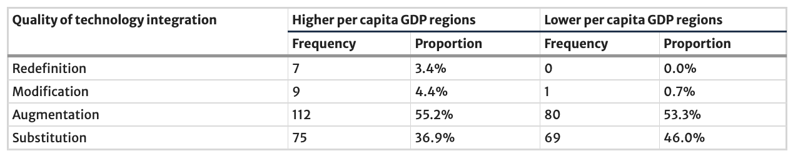
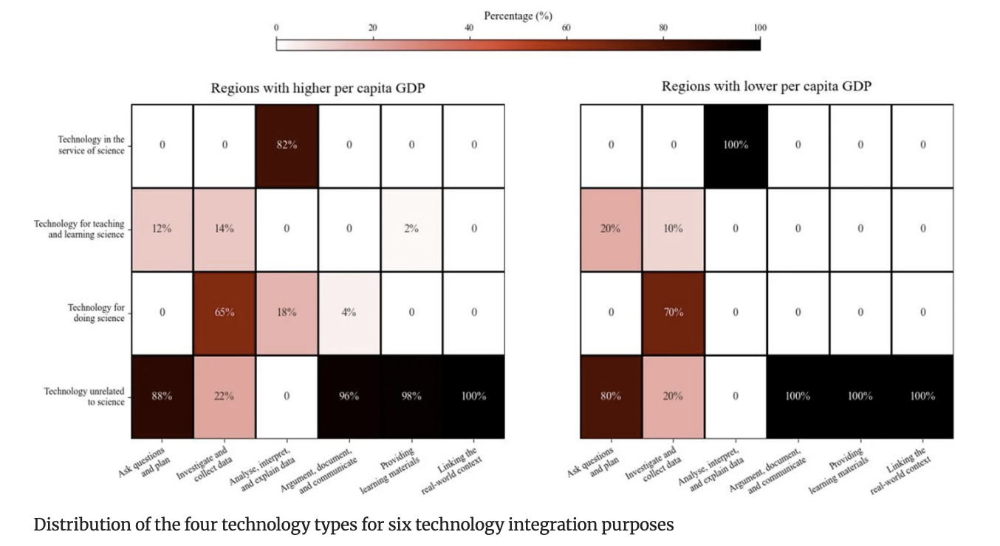

Abstract
This study investigates technology integration in elementary science classrooms across regions with varying per capita GDP to determine whether a second-level digital divide exists in these classrooms, with particular attention given to the frequency, quality, type, and purpose of technology integration. We employ a mixed methods design that combines the quantitative coding and qualitative observation of classroom videos, and we analyze 178 elementary science classroom videos from schools in 28 provincial-level administrative regions in China. The findings indicate that although technology integration is observed in science classrooms across all regions, a second-level digital divide is evident: a significantly higher frequency and quality of technology integration occurs in schools in regions with a higher per capita GDP than in schools in regions with a lower per capita GDP. Our results reveal no differences in the low-quality technology integration across schools in regions with varying per capita GDP; rather, the crucial disparity lies in the significantly lower occurrence of high-quality technology integration in low-GDP regions. Furthermore, this second-level digital divide is prominently reflected in the types and purposes of technologies closely related to science learning. Specifically, schools in regions with higher per capita GDP are more inclined to integrate science-related technologies to support students’ engagement in scientific practices, whereas schools in regions with lower per capita GDP tend to use non-science-related technologies to support general instructional tasks.
Research Focus
The study focuses on the second-level digital divide, moving beyond whether schools have access to digital devices and asking how technology is actually used in science classrooms. It investigates whether economic regional differences shape the frequency, quality, type, and purpose of classroom technology integration. The central concern is not simple access to technology, but whether technology supports meaningful science learning, especially students' participation in scientific practices such as asking questions, collecting data, analyzing evidence, and communicating findings.
Methodology
This study adopted a mixed methods design combining quantitative video coding with qualitative classroom observation. The dataset included 178 elementary science classroom videos selected from China's National Smart Education Platform, covering grades 1 to 6 and approximately 119 hours of classroom teaching.
Key Finding
Second-level digital divide:
Technology was observed across all regions, but classrooms in higher per capita GDP
regions used technology more frequently and with higher integration quality.
Quality gap:
The main disparity appeared at the higher SAMR levels, Modification and Redefinition.
Lower-GDP regions showed similar levels of basic technology use, but fewer examples of
transformative technology integration.

Science-related technology gap: Higher-GDP regions were more likely to use technologies directly related to science learning, especially technologies for doing science, such as sensors or tools for collecting and analyzing data.

Purpose gap: Higher-GDP classrooms used technology more often to support students' scientific practices, while lower-GDP classrooms tended to use technology for general instructional purposes, such as presenting learning materials or introducing real-world contexts.

Discussion & Conclusion
The findings suggest that closing the digital divide in education requires more than
providing devices and internet access. Educational equity also depends on whether teachers
can integrate technology in ways that deepen subject learning.
For elementary science education, future interventions should focus on supporting
teachers, especially in lower-GDP regions, to use technology for authentic scientific
inquiry rather than only for classroom presentation. Targeted professional development,
stronger TPACK support, and examples of high-quality science technology integration
are essential for narrowing the second-level digital divide.